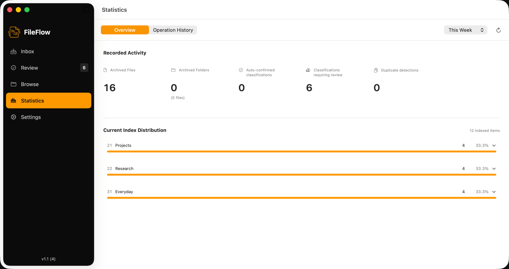
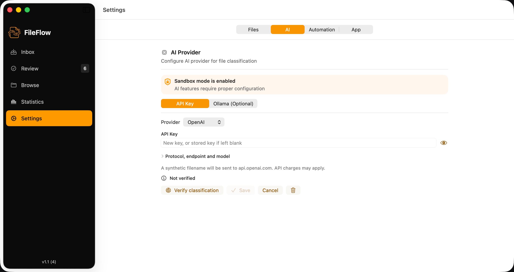

A native workspace for your files
FileFlow
Organize files.
Keep what works.
Review your files. Choose where they belong.
Organize when you are ready.
macOS 14 or later · No FileFlow account required

THE WORKFLOW
See the change before you make it.
From a loose file to a considered destination. Each workspace keeps the next decision in view.
Know what will move where.
Inspect source paths, destinations, and name conflicts in one plan. Nothing in that plan runs until you choose Execute.

Keep the structure that makes sense to you.
Start with a Johnny.Decimal template or use your existing folders. Browse your library without giving up its context.
Understand Johnny.Decimal
A clearer picture of your progress.
See recorded organizing activity and the distribution of indexed files. Check what happened, then return to your work.
{kind=link}

Suggestions, on your terms.
Connect your own API provider or a separately running Ollama service. Review its suggestions. The destination is still your decision.
{kind=link}

FileFlow 1.1 · Real app captures with sample files
A LITTLE MORE DELIBERATE
Your folders. Your decisions.
Start with what you have.
Keep an existing folder structure or build a new one from a Johnny.Decimal template. There is no requirement to start over.
Keep AI optional.
The manual workflow needs no AI account, key, or model. Add classification suggestions only when they are useful to you.
Leave room to review.
Inspect the proposed changes before execution, then check the results. Recovery information is useful, but it is never a substitute for a backup.
CLEAR BOUNDARIES
Confidence starts with knowing the limits.
AI connections
Cloud classification sends metadata, including filenames, and candidate destinations to your chosen provider. Its fees and data policies may apply.
How data is handledUndo and recovery
Undo is available for eligible recent runs, subject to permissions and file availability. It cannot restore the previous contents of overwritten files.
Help with your workflowA few things worth knowing.
Do I need AI?
No. Choose destinations manually and review the plan without configuring an AI provider. Cloud AI requires a network connection; local Ollama requires a running service and model.
Will FileFlow replace my folder structure?
You can use an existing folder structure or initialize a Johnny.Decimal template. You choose the archive root and source folders during setup.
Can I undo everything?
No. Recovery depends on the operation, file availability, permissions, and retained recovery data. Some recoveries may retain archive copies or need manual action. Overwritten old contents are not recoverable through Undo. Keep independent backups.
Where can I get help?
Visit Support for the manual workflow, connection checks, and recovery guidance. You can also contact fileflow@theunclej.com.
A small first step. A workflow you can trust.
Your first three filesGET FILEFLOW
Start with a few files.
The free tier includes 50 file operations in total, not a monthly allowance. An optional Pro purchase removes that quota. Check the App Store and in-app purchase sheet for current local pricing.
View on the Mac App StoreThird-party AI services are separate and may charge for usage.